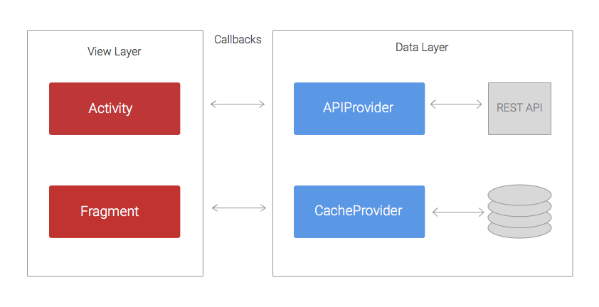
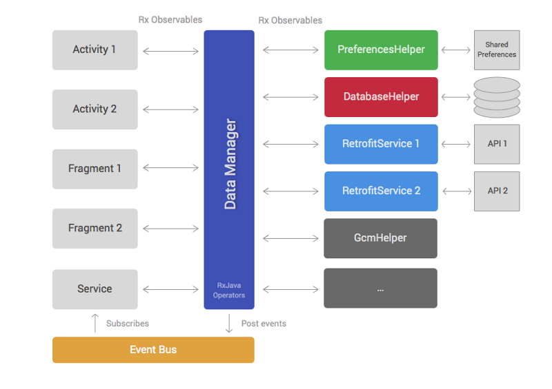
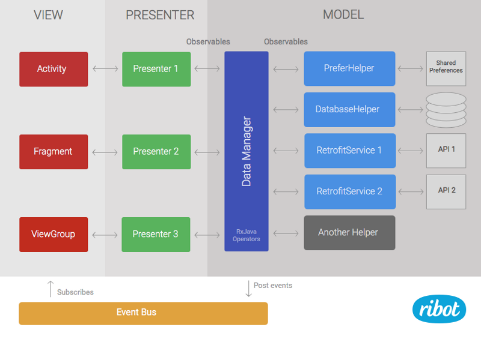

本篇文章将从标准的Activities和AsyncTasks到现代的以RxJava为驱动的基于MVP的架构进行讨论。
@Iván Carballo
原文地址：https://labs.ribot.co.uk/android-application-architecture-8b6e34acda65#.mfi63yx1z
软件的每一个模块都应该独立，就像油泵的每一个齿轮一样。图片via Chester Alvarez
安卓开发生态系统发展的非常快，每周都有新工具的诞生、库的更新发布、大量的技术博客应接不暇。如果你花了一个月的时间在度假，那么等你回来的时候就会有新版本的support库和Play Services的发布。
我已经在ribot团队从事安卓工作有三年时间了。在这期间，我们构建的安卓应用使用到的架构和技术也时刻在更迭中。本文将带你回顾这个过程，为你传授我们的经验，当然也有我们踩过的很多坑，犯过的很多错误。
回到过去
将视线回到2012年，那个时候的我们还很原始。那时候第三方库还很少，我们就使用最基本的结构进行安卓开发。不会使用网络方面第三方库，AsyncTask仍然是我们的朋友。下图展示了那个年代大多数应用的结构：
最初的架构
代码结构分为两层：data layer复杂获取/保存REST APIs和数据库中的数据；view layer复杂操作数据并显示在界面上。
APIProvider提供了很多方法使得Activities/Fragments和容易和REST APIs交互。这些方法使用URLConnection和AsyncTask在单独的线程内执行网络请求，并且将返回的结果通过回调传递给UI。
类似的CacheProvider中的方法负责存取在SharedPreference或者SQLite中的数据。它也会通过回调将结果传递给UI。
使用这种结构最大的问题就是View层要编写大量的代码因为它承担的任务太多了。想象一个很普通的场景，一个应用要加载一个博客列表并且将它们缓存在SQLite中，最后用ListView将它们展示在UI上。Activity中要做如下事情：
- 在APIProvider中调用loadPosts(callback)方法
- 等待APIProvider成功获取数据后再在CacheProvide中调用savePosts(callback)方法
- 等待CacheProvide成功保存数据后再将数据展示在ListView中
- 如果数据获取失败或者数据保存是被还要分别在UI上展示相应的错误信息
这只是一个简单的例子，在实际中很可能是REST API获得的数据并不是UI想要展示的数据。因此，在Activity中要做额外的操作比如转换数据过滤数据然后在展示数据。另外一种情况，当loadPosts()方法要传入的参数需要从某处获得，例如一个邮件地址需要Play Services SDK提供。该SDK很可能使用回调进行异步返回结构，这就意味着我们有三层嵌套回调。如果我们继续增加复杂性将会导致回调陷入困境。
总之：
- Activities和Fragment变的非常庞大并且难以维护
- 太多的嵌套回调意味着代码丑陋、可读性差，如果后续进行更改或者增加新特性将会是一件很头疼的事
- 单元测试将成为一件挑战，如果不可能就是因为太多的业务逻辑编写在Activity或者Fragment中的原因
由Rxjava驱动的新架构
我们遵照上述的结构开发了两年时间，在这期间，我们一直致力于改善上述提到的问题。例如，我们增加了很多帮助类来减少Activity和Fragment中的代码，并且我们在APIProvider使用Volley库。尽管做了这些改变，我们的应用仍然是不好测试，而且回调嵌套问题依旧严重。
直到2014年，我们开始阅读RxJava。随后使用它做了几个例子，发现它可以解决回调嵌套问题。如果你对reactive编程还不熟悉，可以阅读这篇文章。简而言之，RxJava允许你通过异步的方式管理数据，并且提供了很多operators，它可以使你异步进行数据的转变、过滤以及组合等操作。
考虑到我们已经经历了几年的痛苦编程，我们开始考虑如何在新的项目中进行架构，所以我们有了下图：
以RxJava为驱动的架构
和第一种方式类似，该架构可以将数据和视图层进行分隔。data layer包含DataManager和一组帮助类；view layer由安卓framework组件例如Activity、Fragment以及ViewGroup等组成。
Helper classes（图中第三列）有非常具体的职责并且都以简洁的方式实现。例如，很多项目都有访问REST API的帮助类，从数据库中读取数据以及和第三方SDK进行交互。不同的应用会有不一样的帮助类，但是大部分应用都会用到如下帮助类：
- PreferencesHelper：在SharedPreference中存取数据
- DatabaseHelper：操作SQLite数据库
- Retrofit服务：执行REST API的调用，我们开始使用Retrofit来代替Volley是因为它支持RxJava。而且它也是值得使用的优秀库。
帮助类中的很多public方法都会返回RxJava的Observables对象。
DataManager是整个架构的大脑，它使用大量的RxJava Operators对象将从帮助类中获取的数据进行转换、过滤、组合等操作。DataManager的目标就是减少在Activity或者Fragment中进行对数据的操作工作。
|
|
上述代码就是DataManager中的一个方法，该方法将做如下几件事：
- 调用Retrofit服务中从REST API中获取数据
- 使用DatabaseHelper将数据保存到数据库以达到缓存的目的
- 过滤数据，得到今天发布的博客数据
view layer中的组件Activity、Fragment也会调用这些方法并且订阅RxJava中的Observable。一旦数据层完成数据的获取，就会通知订阅者做出相应的操作。
该架构下的最后一个元素就是Event Bus。event bus 允许我们在数据层进行事件广播，所以在视图层的大多数组件可以接收到这些事件。例如，一个DataManager中的signOut()方法在Observable完成时会发布一个事件，这样视图层的Activity可以接收到这个事件并且做出相应的操作例如UI的更新等。
- RxJava的Observables和operators解决了嵌套回调带来的问题
- DataManager负责了之前在Activity和Fragment中的任务，因此Activity和Fragment更加轻量。
- 将Activity和Fragment中的任务迁移到DataManager和帮助类中使得单元测试变的简单。
- 明确职责分离，将DataManager作为和数据层交互的唯一入口使得应用的测试更加友好
- 对于大型的非常复杂的项目来说，DataManager将会变动臃肿并且难以维护
- 虽然View层的组件Activity和Fragment变的轻量了，但是它们仍然要将RxJava subscriptions中进行操作很多逻辑，分析错误消息等。
整合MVP
过去的一年时间里，诸如MVP和MVVM的架构模式在安卓社区流行起来。通过探索这些模式也写了项目和文章，发现MVP对我们现有方法带来了很有价值的提升。因为我们的项目项目架构是两层（view和data），使用MVP是很自然的。我们只需要添加一个新层级presenter并且将部分代码从view层移到presenter层即可。
基于MVP的架构
数据层保持不变但现在MVP中称为模型层。
Presenters层负责从模型中加载数据，并且当得到数据后调用视图层相应的方法。presenter会订阅由DataManager返回的Observables。所以它们必须要处理一些事情例如schedulers和subscriptions。此外，他们可以分析错误代码或者如果需要会将额外的操作应用到数据流上。例如，如果我们需要过滤一些数据并且这个过滤器是不可能在其他地方被重用，那么在Presenter中实现这个过滤器要比在DataManager中实现有意义的多。
|
|
上述代码就是presenter层的一个方法。从代码中可以看到由dataManager.loadTodayPosts()方法返回的Observable被订阅者订阅的一个过程。
mMvpView是presenter中与视图组件相关联的字段。通常情况下MVP的视图层是由 Activity, Fragment或者ViewGroup构成。
和之前的架构一样，视图层包含标准框架中的组件如Activity、Fragment和ViewGroup。但是不同点就是这些组件不会直接去订阅Observables，代替它们订阅的是MvpView接口，该接口也会提供一些简单的方法诸如showError()或者showProgressIndicator()等。当然视图组件也会和处理用户交互事件，例如点击事件，当点击事件发生后会调用presenter中相应的方法。举个例子，如果我们有一个加载list列表的按钮，当按钮被按下后，我们的Activity会在点击事件中调用presenter.loadTodayPosts()方法。
如果你想看到整个MVP架构的工作原理，你可以查阅android-boilerplate这个项目，你也可以看看Architecture Guidelines这篇文章。
- Activity和Fragment更加轻量，它们仅仅负责设置更新UI和事件处理，所以它们变得容易维护
- 现在我们可以很容易为presenter写单元测试。之前这些代码是view层的一部分所以我们很难编写测试用例。现在完全脱离视图层，整个架构变测试性非常好。
- 之前的架构data manager变很臃肿，而使用MVP可以将部分代码迁移到presenter中为data manager瘦身。
- 随着产品迭代代码量加大并且变得复杂的时候，单一的Data Manager依旧是个问题。我们还没有达到这点,但是它的确是个问题,我们认识到,它可能会发生。
重要提醒，MVP不是最完美的架构模式。实际上，我曾经天真的认为它是独特且完美的架构可以很好的解决所有问题。现阶段，Android生态系统仍然以快速的脚步向前发展，我们必须保持不断探索、阅读、实验的精神，这样才能为构建优秀的安卓应用探索出一条光明的大道。